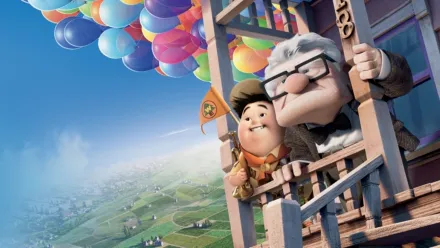
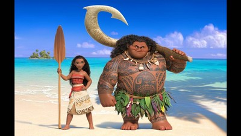

Film kartun Disney bisa menjadi sarana belajar yang sangat efektif bagi anak-anak. Selain menghibur, film-film ini biasanya menyuguhkan berbagai pesan moral yang mendalam dan sangat menginspirasi, yang dapat membantu membentuk karakter serta nilai-nilai positif pada diri anak sejak dini. Secara keseluruhan, film kartun Disney menawarkan kombinasi yang sempurna antara hiburan dan edukasi, asalkan dipilih dan dipandu dengan bijak. Dengan memilih film yang tepat dan aktif terlibat dalam proses menonton, kamu dapat memaksimalkan manfaat yang diperoleh anak dari tontonan tersebut, sekaligus memastikan bahwa pengalaman menonton menjadi kegiatan yang mendidik dan menyenangkan bagi perkembangan mereka.
Cars
Cars merupakan film anak-anak hasil produksi Pixar dan Disney pada tahun 2006. Film satu ini mengambil latar dunia yang diisi oleh mobil dengan tingkah laku seperti manusia.
Up
Film Up rilis pada tahun 2009 dan mengisahkan kehidupan pria tua, yakni Carl Fredricksen. Demi memenuhi janji pada mendiang istrinya, Carl pun menerbangkan rumahnya dengan balon warna-warni untuk pergi ke Paradise Falls.
Frozen
Frozen cukup populer di kalangan anak-anak dan orang dewasa. Film ini bercerita tentang seorang kakak beradik dari keluarga kerajaan bernama Elsa dan Anna.
Moana
Moana menceritakan petualangan putri kepala suku bernama Moana dalam mengembalikan jantung milik Dewi Te Fitti di Lalotai.
